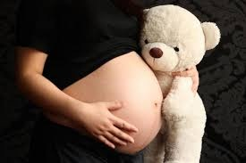

Embarazo Adolescente
El embarazo adolescente se refiere al embarazo que ocurre en mujeres menores de 20 años, generalmente entre los 13 y 19 años. Es un fenómeno que puede tener consecuencias importantes tanto para la madre como para el bebé, así como para la sociedad.
Causas del embarazo adolescente
- Falta de educación sexual integral.
- Desinformación sobre métodos anticonceptivos.
- Presión de pareja o entorno social.
- Baja autoestima o búsqueda de afecto.
- Entornos con pobreza o poca supervisión familiar.
- Abuso sexual o relaciones forzadas.
Consecuencias
Para la madre adolescente:
- Mayor riesgo de complicaciones en el embarazo y el parto.
- Abandono escolar o limitación en su desarrollo personal y profesional.
- Problemas emocionales, depresión y estrés.
- Dificultades económicas.
Para el bebé:
- Mayor probabilidad de nacer con bajo peso.
- Riesgo de parto prematuro.
- Mayor posibilidad de enfrentar pobreza y desnutrición.
- Menores oportunidades educativas a futuro.
Estadísticas
Según datos de organismos internacionales como la OMS y UNICEF, América Latina y el Caribe tienen una de las tasas más altas de embarazo adolescente en el mundo. En muchos países, al menos 1 de cada 5 mujeres se convierte en madre antes de los 19 años.
Prevención
- Implementar educación sexual integral desde edades tempranas.
- Fomentar el uso responsable de métodos anticonceptivos.
- Promover la comunicación abierta entre padres e hijos.
- Empoderar a las adolescentes a tomar decisiones informadas sobre su cuerpo y su futuro.
- Ofrecer espacios seguros de orientación y apoyo emocional.